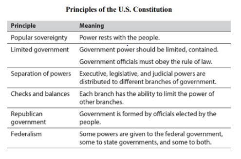
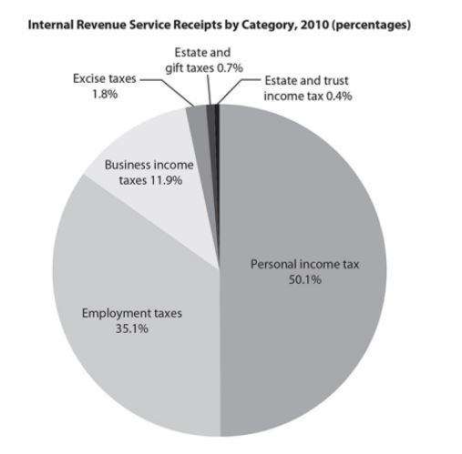
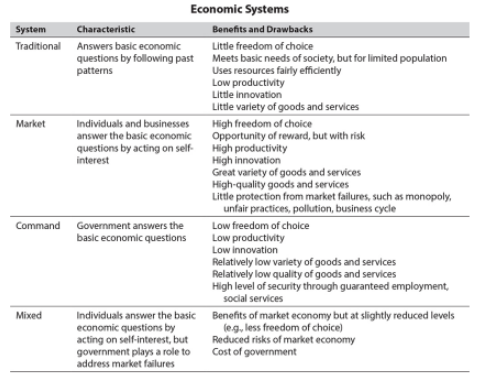

Question 1
Question 2
Question 3
Question 4
The law of supply says that when prices rise, companies see more profit potential and increase the supply of goods and services. The law of demand states that as prices rise, customers buy less.
Question 5
Between 1865 and 1870, in the five years following the end of the Civil War, a number of amendments were added to the United States Constitution. The Thirteenth, Fourteenth, and Fifteenth amendments are collectively known as the Civil War Amendments or the Reconstruction Amendments. These amendments were designed to provide equality under the law for the recently emancipated slaves.
The Thirteenth Amendment, passed in 1865, abolishes slavery throughout the United States.
The Fourteenth Amendment, passed in 1868, has four basic provisions:
- Defines citizenship and the rights of citizens
- Protects voting rights of all citizens or the population basis for representation will be reduced
- Bars certain former members of the Confederate government from elected office
- Repudiates the public debt obligations of the Confederate government
Finally, the Fifteenth Amendment, passed in 1870, extends the right to vote to African American men.
Question 6
Question 7
Question 8
Question 9

Question 10
1. The Preamble to the Constitution states that “We the People of the United States . . . do ordain and establish this Constitution for the United States of America.” This statement embodies the principle of_______________.
2. In 1920, the U.S. Senate voted against ratification of the Treaty of Versailles. What principle did this vote exemplify?
3. When the Bill of Rights was added to the U.S. Constitution, what principle was given greater strength?
4. Why does supply go up when new technology lowers production costs?
5. Which statement best explains the sequence of these amendments?
6. Income taxes paid by individuals account for approximately how much more of Internal Revenue Service receipts than business income taxes?
7. Based on the information in the chart, which type of economy is most likely the second most productive?
8. Which aspect of the U.S. economy reflects its roots in a capitalist, or market, economic system?
9. How much did the U.S. urban population change from 1950 to 2010?
10. Which decade saw no growth in urbanization?